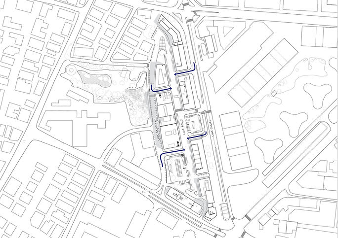
The following project is located in the Carlebach district of Tel Aviv, an area characterized by a diverse programmatic mix. This district features offices, retail spaces, parking lots, restaurants, gyms, and even nightclubs, making it a vibrant urban hub active around the clock.
Situated between the Lev Tel Aviv and Sarona Gardens neighborhoods—two rapidly developing residential areas—Carlebach enjoys a strategic position that blends historical elements with modern urban renewal. The project's location, bridging residential and commercial zones, offers a unique potential to contribute to a heterogeneous urban fabric, connecting various lifestyles while integrating functional, cultural, and social needs.
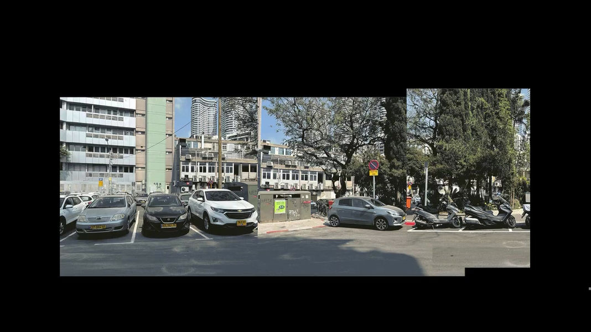
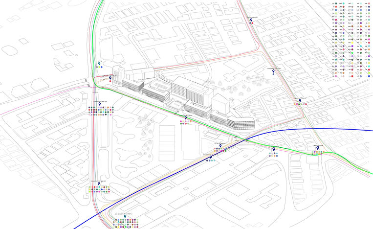
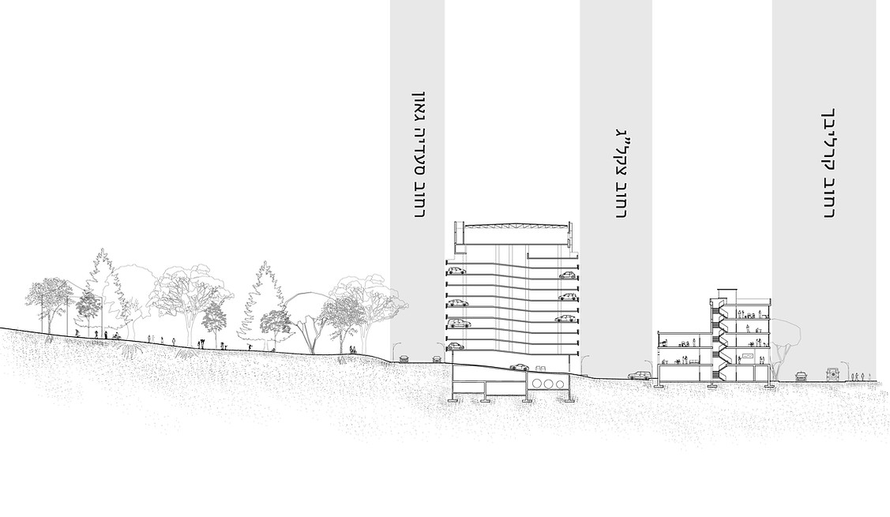
From wandering through the site, we felt that the Carlebach district remains a backlot of the city, serving more as a shortcut than as a proper urban street. The abundance of cars and parking lots highlighted for us that this is part of a problem that needs change.
As long as parking spaces are removed and vehicles are restricted from entering, the entire district could transform into a pedestrian-friendly boulevard, inviting the city to embrace it as a lively and engaging urban space.
After thoroughly examining the accessibility and transportation options in the area, we found that, on average, a bus line passes every ten minutes. This led us to realize that the district can function efficiently without the need for private vehicles.
Therefore, we chose to focus on the existing parking lot within the district. We saw the parking lot as a connecting element between the park and Tel Aviv's vibrant community life and the Carlebach district, thanks to the pathway running through it.
Understanding that the area is predominantly home to young families and recognizing the high cost of living in Israel, our goal was to design affordable housing within the parking lot. This housing would serve as the initial gateway to opening up the Carlebach district and making it more accessible to the public.
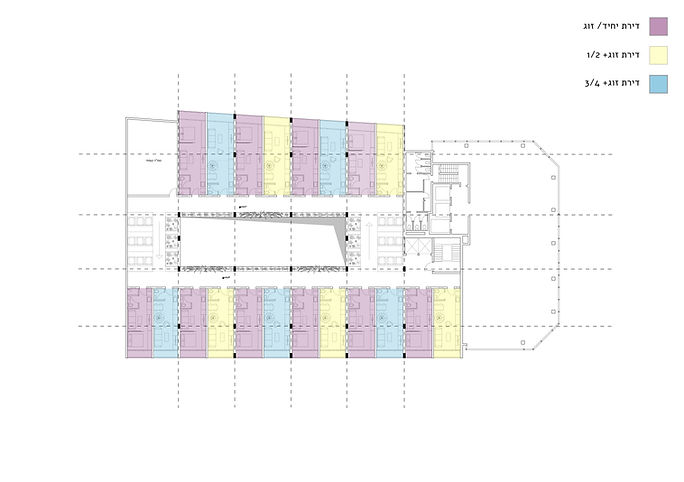
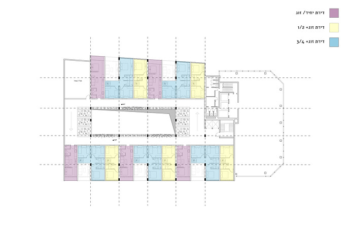
The main challenge of constructing a residential building within a parking lot was the height differences between floors caused by the vehicle ramps. Our solution to this problem was to treat each level as a half-floor, effectively combining two levels into one. This approach allowed us to design narrow yet tall apartments, ensuring comfortable living conditions while maximizing the number of units within the structure.
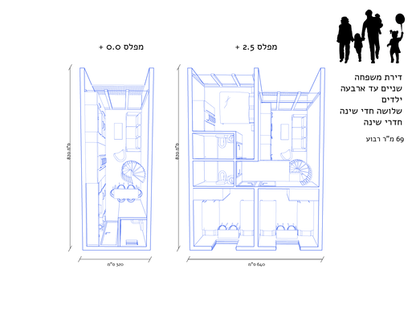
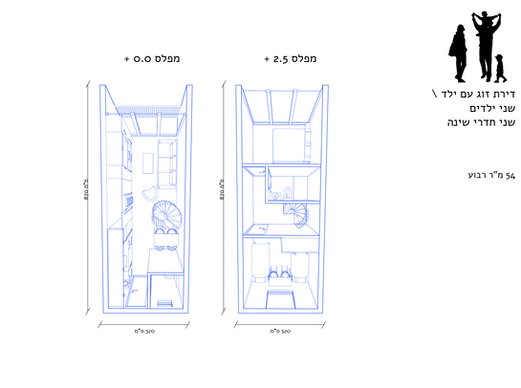
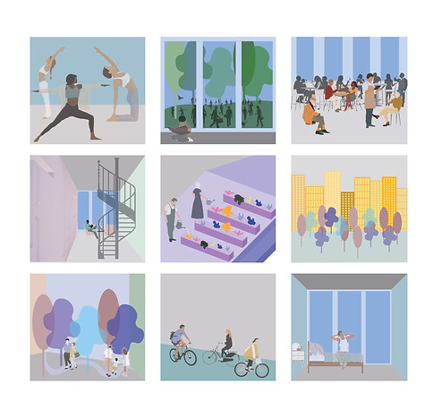
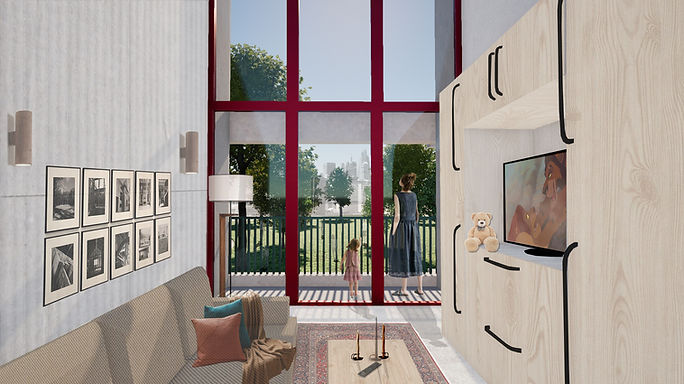
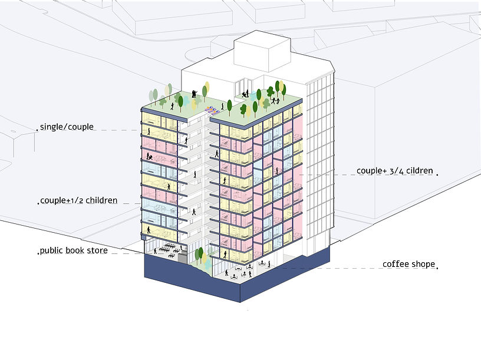
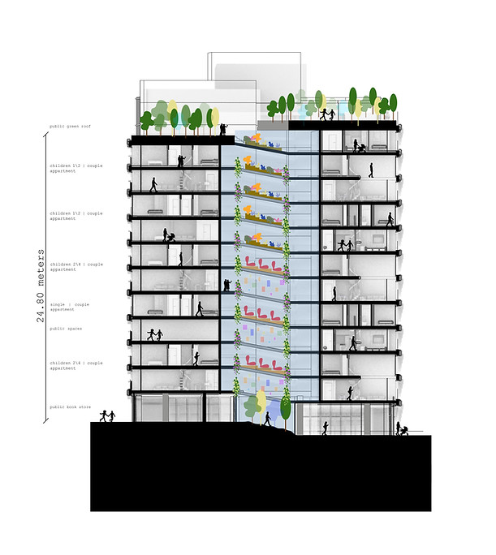
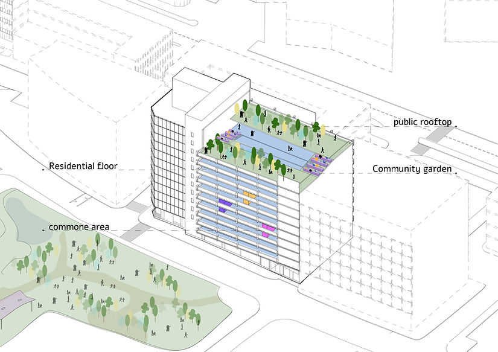